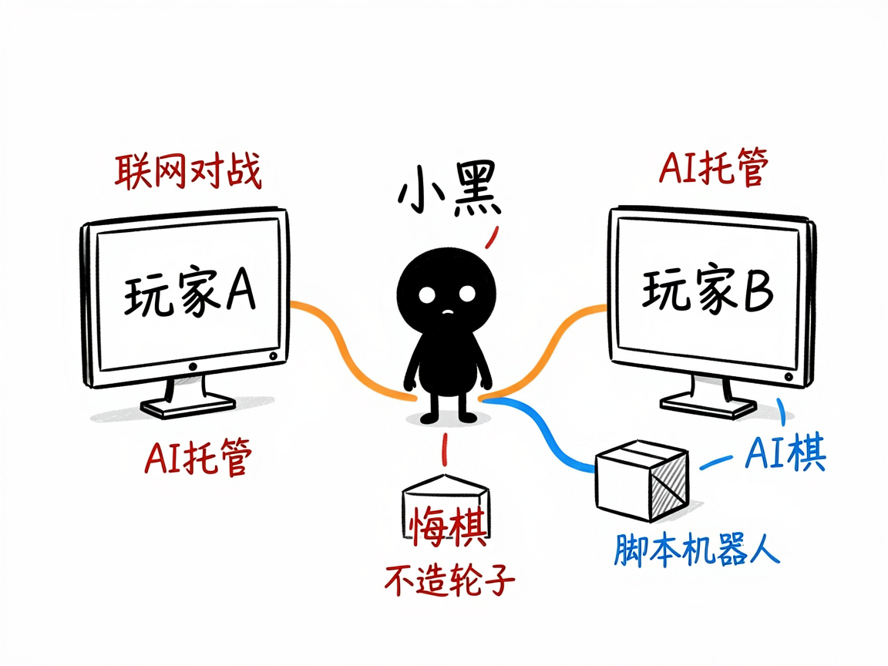

想自己做一款棋牌或桌游？它帮你把规则写成能跑的游戏 —— boardgame-io 介绍
你脑子里有个游戏点子：一个三子棋变种、一副卡牌对战、或者带骰子的桌游。你不会写复杂的游戏引擎，但想让它真的能两个人玩、能联网、还能让电脑当对手。
boardgame-io 就是来解决这件事的。
它是一个专门做"回合制游戏"（棋类、卡牌、骰子、策略游戏）的开发框架（开源库）。你给它游戏的规则和界面，它还你一个真正能玩、能联机、能测试的游戏。你不用从零写服务器和状态同步那套麻烦事，框架都替你管好了。

它到底能做什么
- 定义游戏逻辑：用几行代码写清楚"棋盘长啥样、玩家每步能干什么、怎么算赢"——框架负责在两端同步状态、支持悔棋和电脑托管。
- 自动联网对战：想和朋友在线玩，框架自带服务端方案，不用自己造轮子。
- 做单人 vs AI：内置"脚本机器人"机制，可以让电脑按你写的套路出招当对手。
- 出游戏界面：配合 React（一种做网页界面的技术）就能画出棋盘、手牌，点一下就走一步。
- 带现成模板：仓库里备了"极简棋类"和"卡牌对战"两套可直接改的骨架，换皮就能用。
- 写测试：游戏逻辑可以脱离界面单独跑测试，保证规则改了不会出 bug。

一个具体例子
import { Client } from 'boardgame.io/react';
import MyGame from './game';
import Board from './board';
const App = Client({ game: MyGame, board: Board, debug: true });
上面这段是把游戏接到网页上的最小写法；而游戏本身长这样：
export const MyGame = {
setup: () => ({ cells: Array(9).fill(null) }),
moves: {
clickCell: ({ G, playerID }, id) => { G.cells[id] = playerID; },
},
turn: { minMoves: 1, maxMoves: 1 },
};
（这是三子棋的核心：cells 是 9 格棋盘，clickCell 是落子动作。）
谁适合用
- 想做一款自己的桌游 / 棋牌小游戏来练手或上线的开发者。
- 想给现有网站加个能玩的小游戏的人。
- 做 AI 工具、需要按"棋盘/回合制"思路搭原型的工程师。
一点说明 / 小提示
它是给"会写一点 JavaScript/TypeScript 代码的开发者"用的框架，不是普通人双击就能打开的 APP。最实用的玩法是直接复制它给的现成模板改主题，而不是从头重写引擎——文档里反复强调"复制比重写靠谱"。如果你自己不会写代码，可以把它交给会编程的人，或装在带这个技能的 AI 助手上让它帮你搭。具体能力以项目文档为准。